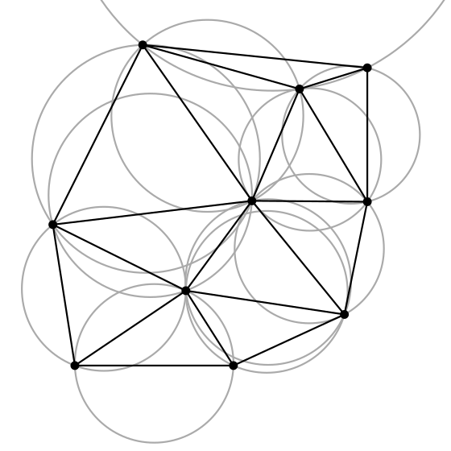

Voronoi Diagrams and Their Connections to Classification#
This notebook covers:
Introduction to Voronoi diagrams
Voronoi diagrams and Delaunay triangulation
Connection to kNN classification
Connection to Bayesian decision theory
Lloyd’s relaxation algorithm
1. Introduction to Voronoi Diagrams#
A Voronoi diagram is a partitioning of a plane into regions based on the distance to a specified set of points (called seeds, sites, or generators). For each seed, there is a corresponding region consisting of all points closer to that seed than to any other.
Definition#
Given a set of points \(P = \{p_1, p_2, ..., p_n\}\) in a plane, the Voronoi diagram divides the plane into \(n\) regions, where each region \(V(p_i)\) contains all points that are closer to \(p_i\) than to any other point in \(P\):
where \(d(x, y)\) is the distance between points \(x\) and \(y\), typically the Euclidean distance.
Properties of Voronoi Diagrams#
Each Voronoi region is a convex polygon (or unbounded polyhedron).
The edges of Voronoi regions are equidistant from the two nearest seed points.
The vertices of Voronoi regions (Voronoi vertices) are equidistant from three or more seed points.
 Voronoi diagram. | Image: Francesco Bellelli
Voronoi diagram. | Image: Francesco Bellelli

Applications of Voronoi Diagrams#
Voronoi diagrams have applications in various fields:
Computer Science: Nearest neighbor search, motion planning, computer graphics
Soap Bubbles: The Geometry Of Bubbles And Foams, Math of Soap Bubbles and Honeycombs
Computational Geometry: Delaunay triangulation, mesh generation
Machine Learning: k-nearest neighbors, clustering algorithms
Geography: Trade area analysis, facility location
Biology: Modeling cell growth, ecological studies
Astronomy: Analyzing galaxy distributions
Architecture and Urban Planning: Space partitioning, city planning
Image Processing: Image segmentation, Superpixels [AS17]
2. Voronoi Diagrams and Delaunay Triangulation#
The Delaunay triangulation is the dual graph of the Voronoi diagram. For a set of points in a plane, the Delaunay triangulation creates a triangulation such that no point is inside the circumcircle of any triangle.


Source: Algorithms for Working with Triangulated Surfaces
Further Reading: Properties of Delaunay Triangulation
It maximizes the minimum angle of all triangles, avoiding skinny triangles.
The circumcircle of any Delaunay triangle contains no other point in its interior.
The Delaunay triangulation is the dual graph of the Voronoi diagram.
Relationship between Voronoi Diagrams and Delaunay Triangulation#
Two points are connected in the Delaunay triangulation if and only if their Voronoi regions share an edge.
The circumcenter of each Delaunay triangle is a vertex in the Voronoi diagram.
The Delaunay triangulation can be constructed from the Voronoi diagram and vice versa.
3. Connection to kNN Classification#
The k-Nearest Neighbors (kNN) algorithm is closely related to Voronoi diagrams. In fact, for k=1, the decision boundaries of 1-NN are exactly the Voronoi diagram of the training points.
1-NN and Voronoi Diagrams#
In 1-NN classification:
Each point is classified according to the class of its nearest neighbor in the training set.
The decision boundary between two classes is the perpendicular bisector of the line connecting two points of different classes.
These perpendicular bisectors form the edges of the Voronoi diagram.
4. Connection to Bayesian Decision Theory#
Voronoi diagrams also have connections to Bayesian decision theory, particularly in the case of equal covariance matrices. In Bayesian decision theory, we classify a point based on the posterior probability of each class given the observation.
Bayesian Decision Boundaries#
In Bayesian Decision Theory we saw:
Decide \( \omega_1 \) if \( P(\omega_1|x) > P(\omega_2|x) \), otherwise decide \( \omega_2 \).
For two classes with multivariate normal distributions, the decision boundary is determined by \(P(\omega_1|x) = P(\omega_2|x)\):
where \(p(x|\omega_i)\) is the class-conditional density and \(P(\omega_i)\) is the prior probability of class \(i\).
Case 1: Equal Covariance Matrices#
We saw that when the covariance matrices are equal (\(\Sigma_1 = \Sigma_2 = \Sigma\)), the decision boundary simplifies to a linear boundary. If the priors are also equal, the decision boundary becomes the perpendicular bisector of the line connecting the means of the two classes.
where:
and
This is exactly the same as the Voronoi edge between two points in a Voronoi diagram, where the points are the means of the two classes.
5. Lloyd’s Relaxation Algorithm#
Lloyd’s algorithm (also known as Voronoi iteration or relaxation) is an iterative method for finding evenly spaced sets of points in a region. It’s commonly used for centroidal Voronoi tessellation, where each generator point is also the centroid (center of mass) of its Voronoi region.
Algorithm Steps:#
Start with an initial set of generator points.
Compute the Voronoi diagram for these points.
Compute the centroid of each Voronoi region.
Move each generator point to the centroid of its Voronoi region.
Repeat steps 2-4 until convergence or a maximum number of iterations is reached.
This algorithm is closely related to the k-means clustering algorithm, which can be viewed as a discrete version of Lloyd’s algorithm.
Exercise: Lloyd’s Relaxation Algorithm#
Implement Lloyd’s relaxation algorithm for Voronoi diagrams and create a visualization showing the evolution of the diagram over 30 iterations, similar to the figure “30 iterations of the Lloyd’s algorithm. Source: Francesco Bellelli”.
Steps:
Generate a set of random initial points
For each iteration: a. Compute the Voronoi diagram b. For each Voronoi cell, compute its centroid c. Move each generator point to the centroid of its cell
Visualize the evolution of the Voronoi diagram
6. Summary#
In this notebook, we’ve explored Voronoi diagrams and their connections to various aspects of machine learning and computational geometry:
Voronoi Diagrams: A partitioning of space based on the distance to a set of points.
Delaunay Triangulation: The dual graph of the Voronoi diagram, with properties useful for mesh generation and computational geometry.
Connection to kNN Classification: For k=1, the decision boundaries of the 1-NN classifier are exactly the Voronoi diagram of the training points.
Connection to Bayesian Decision Theory: With equal covariance matrices and equal priors, the Bayesian decision boundary between two Gaussian distributions is a straight line that corresponds to a Voronoi edge.
Lloyd’s Relaxation Algorithm: An iterative method for creating centroidal Voronoi tessellations, closely related to k-means clustering.
These connections highlight the fundamental importance of Voronoi diagrams in understanding spatial relationships and classification boundaries. In the next chapter, we’ll explore clustering algorithms, which build upon many of these concepts.
References#
Duda, R. O., Hart, P. E., & Stork, D. G. (2001). Pattern Classification (2nd ed.). Wiley-Interscience.
Lloyd, S. P. (1982). Least squares quantization in PCM. IEEE Transactions on Information Theory, 28(2), 129-137.
Aurenhammer, F. (1991). Voronoi diagrams—a survey of a fundamental geometric data structure. ACM Computing Surveys, 23(3), 345-405.
Manoj Kumar Mukundan, Safeer Babu Thayyil, Ramanathan Muthuganapathy, A parallel algorithm for computing Voronoi diagram of a set of spheres using restricted lower envelope approach and topology matching, Computers & Graphics, Volume 106, 2022 Pages 210-221,
Daniel Reem, The projector algorithm: A simple parallel algorithm for computing Voronoi diagrams and Delaunay graphs, Theoretical Computer Science, Volume 970, 2023